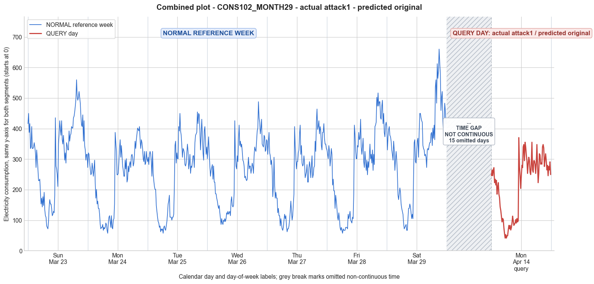

CONS102_MONTH29 · actual attack1 · predicted original
- Pair
- CONS102_MONTH29
- GT
- attack1
- Prediction
- original
- Binary GT
- attacked
- Binary Prediction
- original
- Source
- E010
- Parse
- stored
- Date
- 2014-04-14
- Weekday
- Monday
- Latency
- 2.04 min
- Tokens
- 9692

Final output
Classification: - Original
Prompt
You are a domain expert in smart grid security and electricity theft analysis, with deep knowledge of non-technical loss (NTL) attack patterns in smart meters. You are given: 1. A plot of one week of original (normal) energy consumption for a smart meter, provided as context for the customer's typical consumption behavior. 2. A plot of one day of energy consumption for the same smart meter, which may or may not be manipulated. Below are common attack types, each defined by how consumption values are altered, their impact on magnitude and trend, and their possible technical causes. Attack 0: Generated by replacing all electricity consumption samples with zero values for the entire observation duration. Simulates a scenario where no energy usage is reported at all. May be caused by a total meter bypass or severe meter malfunction. Completely eliminates both the trend and magnitude of the consumption profile. Attack 1: Multiplies the actual energy consumption by a constant random value between (0,1). The lower the factor, the higher the severity. Can be triggered by meter bypass, magnetic interference, reverse current, and false data injection. The consumption trend remains the same but the magnitude is uniformly reduced. Attack 2: Generated by replacing consumption samples with zeros for a random duration. Also known as an on-off attack. Can be caused by full meter bypass, false data injection, and reverse current. Changes both the trend and amplitude. Attack 3: The actual consumption is multiplied by different random factors between 0 and 1, with a unique factor per sample. Similar to Attack 1 but the scaling factor varies per reading. Caused by meter bypass, magnetic interference, and reverse current. Changes both the trend and amplitude. Attack 4: Simulates energy theft over a randomly selected period within the observation window. All measurements in that period are reduced. Caused by meter bypass, magnetic interference, reverse current, and false data injection. Changes both the trend and amplitude. Attack 5: Each sample is replaced by a false value obtained by multiplying the average normal consumption by a random variable between 0 and 1, with a different variable per sample. Caused by false data injection. Produces a completely different pattern from the original consumption profile, changing both trend and magnitude. Attack 6: A random cut-off point is selected and all consumption values above it are replaced by that cut-off value. The attacker avoids exceeding a predefined maximum limit. Mainly caused by false data injection. Changes both the trend and amplitude. Attack 7: A random cut-off point is subtracted from each sample; if the result is negative, zero is reported. Similar to Attack 6 but replaces exceeding values with zero instead of the cut-off point. May be caused by false data injection or total meter bypass. Does not change the trend but reduces overall consumption. Attack 9: All samples are replaced by the average daily energy consumption, resulting in a flat constant profile. Easily detectable because constant consumption does not reflect normal customer behavior. Caused by false data injection. Eliminates all trends. Attack 10: Reverses the consumption pattern without reducing the total amount. Applicable when the electricity company uses time-varying pricing, allowing the attacker to shift high consumption to off-peak periods. Caused by false data injection. Changes the trend without decreasing total consumption. Attack 12: The attacker replaces their consumption pattern with that of a lower-consuming user. The legitimate user unknowingly pays the adversary's electricity bill. Caused by false data injection. Attack IEEE: For each 15-minute interval across the entire day, the consumer either reports the actual electricity consumption or substitutes it with zero. The result is a profile where some intervals reflect real consumption while others are zeroed out, creating an irregular pattern across the full day. May be caused by false data injection. Changes both the trend and amplitude. Given the two plots, determine: 1. Whether the day is attacked or original - compare the flagged day against the normal week and assess whether the consumption pattern is consistent with normal behavior or shows signs of manipulation. If the day is consistent with the customer's typical consumption behavior, classify it as original and provide no further analysis. If manipulation is detected, proceed to point 2. 2. Which attack type this most likely is - identify the single most probable attack and justify your choice based on how the flagged day deviates from the normal week. 3. The behavior of the identified attack - explain how the consumption values are manipulated, their impact on magnitude and trend, and the possible technical causes behind this type of attack. Output Format: Classification: - Original | Manipulated Identified Attack: (fill only if manipulated) - Most Likely: Attack X - Confidence: High | Medium | Low - Reasoning: Why it matches Attack X and why Attack Y and Attack Z were ruled out (list top 2 alternatives considered) Attack_Behavior_Explanation: (fill only if manipulated) - How consumption values are manipulated relative to the normal week - Impact on magnitude and trend - Possible technical causes
Reasoning content
We are given reference week data and a query day (DAY_ID=1) for a smart meter. The reference week consists of 7 days, each with 96 readings (15-min intervals). The query day is also 96 readings. Our task: Determine if the query day is original or manipulated, and if manipulated, identify the attack type. First, let's look at the statistics provided: Reference week (per day): Day 0: min=71.77, max=559.81, std=122.51, mean=313.60 Day 1: min=57.42, max=406.70, std=103.55, mean=239.18 Day 2: min=57.42, max=454.55, std=116.70, mean=258.42 Day 3: min=86.12, max=488.04, std=101.56, mean=257.38 Day 4: min=62.20, max=464.11, std=109.80, mean=252.84 Day 5: min=57.42, max=516.75, std=134.10, mean=270.14 Day 6: min=66.99, max=660.29, std=142.13, mean=321.92 Query day (DAY_ID=1): min=41.59, max=370.50, std=96.64, mean=216.80 The query day has a lower mean (216.80) compared to all reference days (lowest mean is Day 1 at 239.18). The min is also lower (41.59 vs. 57.42) and max is lower (370.50 vs. 406.70+). The standard deviation (96.64) is slightly lower than the reference week's Day 1 (103.55) but not drastically. Now, look at the temporal features: Query day is cal_month=4, dow=0 (Monday), dom=22. Reference week Day 1 is cal_month=3, dow=0, dom=1. So both are Mondays, but different months and days of month. That could indicate similar weekly pattern, but monthly variation. Compare the consumption pattern of query day to the reference week, especially Day 1 (Monday). Let's plot the numbers mentally. Day 1 reference: The morning has values like 272.73, 320.57, 315.79, 287.08... Then midday dip to 57.42, then evening peak up to 406.70. The pattern shows typical morning and evening peaks. Query day values: starts 245.74, 264.64, 245.74, 264.64, 272.21, 223.06, 234.40, 215.50, 230.62, 185.25, 207.93, 223.06, 185.25, 173.91, 143.66, 132.32, 113.42, 94.52, 105.86, 102.08, 75.61, 56.71, 41.59, 52.93, 41.59, 49.15, 49.15, 68.05, 83.17, 71.83, 83.17, 68.05, 75.61, 90.74, 113.42, 98.30, 83.17, 86.95, 90.74, 102.08, 90.74, 105.86, 94.52, 98.30, 370.50, 275.99, ... and so on. Notice the pattern: early morning until about index 44 is relatively low, then a sharp spike at 370.50, followed by high values. The spike occurs around index 45, which is around 11:15? 96 readings/24 hours = 4 readings per hour, so index 0 is midnight, index 4 is 1:00, index 8 is 2:00, etc. So index 44 is 11:00, index 45 is 11:15, spike at 370.50. Then continues high until later. This looks like a typical pattern: morning ramp-up might be missing, but there is a late morning peak. However, the reference Monday (Day 1) had a morning peak around 8-10 am? Let's check Day 1 data: indices 0-47 roughly. Day 1: starts at 272.73 (midnight), then 320.57, 315.79, 287.08, 267.94, 248.80, 253.59, 287.08, 267.94, 244.02, 267.94, 296.65, 220.10, 172.25, 200.96, 153.11, 162.68, 138.76, 138.76, 119.62, 86.12, 71.77, 76.56, 76.56, 86.12, 66.99, 76.56, 71.77, 76.56, 90.91, 86.12, 66.99, 57.42, 90.91, 110.05, 114.83, 95.69, 76.56, 114.83, 76.56, 71.77, 100.48, 105.26, 153.11, 387.56, ... So after index 44 (11:00?), Day 1 has 153.11 at index 44? Wait, let's count indices. 96 readings, index 0 = 00:00, index 1 = 00:15, ... index 4 = 01:00, index 8 = 02:00, ... So index 44 = 11:00 (since 44*0.25 = 11.0). Day 1 at index 44 is 105.26? Actually reading the Day 1 list: after the low values, "... 71.77, 100.48, 105.26, 153.11, 387.56, ..." So index 43: 71.77? Let's precisely index. I'll number the Day 1 readings: 0:272.73 1:320.57 2:315.79 3:287.08 4:267.94 5:248.80 6:253.59 7:287.08 8:267.94 9:244.02 10:267.94 11:296.65 12:220.10 13:172.25 14:200.96 15:153.11 16:162.68 17:138.76 18:138.76 19:119.62 20:86.12 21:71.77 22:76.56 23:76.56 24:86.12 25:66.99 26:76.56 27:71.77 28:76.56 29:90.91 30:86.12 31:66.99 32:57.42 33:90.91 34:110.05 35:114.83 36:95.69 37:76.56 38:114.83 39:76.56 40:71.77 41:100.48 42:105.26 43:153.11 44:387.56 45:354.07 46:325.36 47:248.80 ... So the morning peak on Day 1 occurs at index 44 with 387.56, then continues high. That's exactly like query day: Query day index 44 is 370.50, then continues high. So both show a spike around 11:15, characteristic of a Monday pattern? Maybe typical for this customer. The reference Day 1 has a morning dip before 11am with low values (min 57.42). Query day also has low values before 11am (min 41.59). So the overall shape is consistent. But the magnitude seems lower: Query day mean 216.80 vs. Day 1 mean 239.18. That's a reduction of about 9.3%. The standard deviation is slightly lower but similar. Let's examine the pattern more closely. Compare the values in the early morning (midnight to ~11:00) and late afternoon/evening. Day 1: early morning values start at midnight ~272-320, gradually decreasing to around 200-300, then dipping further. The dip bottom around index 32 (57.42) at 8:00, then slowly increasing till 11:00 spike. Query day: starts at 245.74, 264.64, 245.74, 264.64, 272.21, then gradually decreasing to lows around 41.59 at index 22 (5:30), then stays low until spike at 11:15. So the pattern is similar but with lower values overall. The evening peak: Day 1 has values like 315.79, 306.22, etc. after the spike, with max 406.70. Query day has max 370.50, and later values in evening are like 340.26, 347.82, 355.38, etc. So it's slightly muted. Could it be an attack? Many attack types reduce magnitude (Attack 1, 2, 3, 4, 6, 7, 12, IEEE). Attack 1 multiplies by constant factor between (0,1). If we test the ratio query/day1 at some points: e.g., spike: 370.50/387.56 ≈ 0.956; early morning: 245.74/272.73 ≈ 0.901; but at the dip: 41.59/57.42 ≈ 0.724. The ratio varies, not constant. Attack 1 uses a constant random factor, so ratio would be roughly constant (if factor is constant, all values scaled by same factor). But here the ratio varies, so Attack 1 unlikely. Attack 3: multiplies by different random factors per sample. That could produce varying ratios. However, Attack 3 is described as "actual consumption is multiplied by different random factors between 0 and 1, with a unique factor per sample." That would cause a noisy reduction, not a smooth pattern. The query day pattern looks smooth, not noisy, and closely follows the shape of Day 1 with a slight scaling. The query day's pattern is very similar to Day 1, just slightly lower in magnitude overall. Could it be a different day but natural variation? The mean is lower and min/max are lower, but the shape is preserved. The query day is cal_month=4, while reference week is cal_month=3. Seasonal changes could cause lower consumption in April vs March? In the Northern Hemisphere, April is spring, so heating might decrease, so consumption could be lower. That could be natural. But the task asks: "determine whether the day is attacked or original - compare the flagged day against the normal week and assess whether the consumption pattern is consistent with normal behavior or shows signs of manipulation." The pattern is consistent: two peaks (morning-ish at 11am and evening) with a dip overnight. The magnitude is somewhat lower, but not drastically. The standard deviation is similar. The min is slightly lower, but the overall shape matches the Monday reference day. Let's check other days of the reference week to see if this magnitude is within normal variation. Day 2 (Tuesday) had mean 258.42, min 57.42, max 454.55. Query day mean 216.80 is lower than all reference days. The lowest mean in reference week is Day 1 at 239.18. So query day is 9.4% lower than the lowest reference day. Is that a significant drop? Possibly, but not extreme. However, the query day's max (370.50) is also lower than Day 1's max (406.70). The min (41.59) is lower than Day 1's min (57.42). So the entire distribution seems shifted down. That could indicate a scaling attack, like Attack 1 with a factor around 0.9. But the ratio is not constant (e.g., 370.50/387.56=0.956, while 41.59/57.42=0.724). If it were constant scaling, the ratio would be consistent. The lower values seem reduced more relative to Day 1. Maybe the scaling is not multiplicative but subtractive? Attack 7 subtracts a cut-off point, and Attack 6 caps values. Attack 6 "A random cut-off point is selected and all consumption values above it are replaced by that cut-off value." That would produce a flat-top effect. The query day's peak values are not flat; they vary. Attack 7 subtracts a cut-off, which would shift values down by a constant, and values below become zero. If we subtract a constant from Day 1, say subtract 30, then 387.56 -> 357.56 (close to 370.50), 57.42 -> 27.42 (but query day min is 41.59, not zero). So not constant subtraction. Attack 12: replace pattern with lower-consuming user. That could be the case: the query day pattern is similar in shape but lower overall, resembling a lower-consuming household. But it's the same meter, so unlikely to be Attack 12 unless the attacker is mimicking another user. That would be false data injection. Attack IEEE: "For each 15-minute interval across the entire day, the consumer either reports the actual electricity consumption or substitutes it with zero." That would create zero values mixed with real. Query day has no zeros, min 41.59, so not that. Attack 2: zero for random durations. No zeros here, so no. Attack 4: randomly selected period reduced. The entire day seems lower, not just a period. Attack 5: replace with false values by multiplying average normal consumption by random variable. That would produce completely different pattern, not similar shape. Attack 0: all zeros, no. Attack 9: all samples replaced by average, flat constant, no. Attack 10: reverses pattern, no. So the most plausible attack, if any, is Attack 1 or possibly Attack 3, but the varying ratio makes Attack 1 less likely, and Attack 3 would introduce more noise. However, the query day's pattern is very smooth, suggesting it might just be a natural lower consumption day. The fact that the query day is a Monday (dow=0) but in a different month could explain the difference. For instance, the reference Monday was March 17? (cal_month=3, dom=1 could be March 1? Actually week_id=3, day_id=1, so maybe not exactly March 1, but March). The query day is April 14 (cal_month=4, dow=0, dom=22). April 14, 2014 was indeed a Monday. So it's a different Monday, a few weeks later. As season progresses, heating load reduces, so consumption could naturally be lower. Thus, I lean towards original. But we must be careful: the reference week's Monday had mean 239.18, query Monday 216.80, a drop of ~9%. That's plausible without attack. Also, the standard deviation is similar, indicating similar variability. If it were an attack like Attack 1, the factor would be constant across all samples, so the shape would be identical but scaled. By comparing the ratio of each sample (query / Day1 reference), we can see if it's constant. I'll compute a few ratios: At spike (index 44): 370.50/387.56=0.956. Index 0: 245.74/272.73=0.901. Index 1: 264.64/320.57=0.825. Index 2: 245.74/315.79=0.778. Index 3: 264.64/287.08=0.922. Index 4: 272.21/267.94=1.016 (query higher!). Index 5: 223.06/248.80=0.896. Index 6: 234.40/253.59=0.924. Index 7: 215.50/287.08=0.751. Index 8: 230.62/267.94=0.861. Index 9: 185.25/244.02=0.759. Index 10: 207.93/267.94=0.776. Index 11: 223.06/296.65=0.752. Index 12: 185.25/220.10=0.842. Index 13: 173.91/172.25=1.010 (query higher). Index 14: 143.66/200.96=0.715. Index 15: 132.32/153.11=0.864. Index 16: 113.42/162.68=0.697. ... The ratios vary widely, so it's not a constant scaling. Attack 1 would have constant factor. Attack 3 would have random factor per sample, which would cause more erratic variations, but the pattern here looks coherent and similar to Day 1, not noisy. The varying ratio could be attributed to natural day-to-day variation. So it's likely original. Also, consider Attack 4: "Simulates energy theft over a randomly selected period ... All measurements in that period are reduced." If the period were the entire day, it would be like Attack 1 but with varying reduction? It says "All measurements in that period are reduced." The description doesn't specify how they are reduced. Could be multiplied by a factor? Typically, in literature, Attack 4 is a specific period where readings are multiplied by a factor less than 1. But if the period is the whole day, it's essentially Attack 1. The pattern would scale the selected period. Again, we don't see constant scaling. Thus, I classify as Original. But wait, the task says: "If the day is consistent with the customer's typical consumption behavior, classify it as original and provide no further analysis." So I will classify as Original. But I need to double-check if there's any subtle manipulation: The query day's pattern shape is very similar, but the spike height is lower, and the overnight lows are lower. The ratio of spike to overnight low: Day1 spike 387.56, low 57.42 => ratio 6.75. Query day spike 370.50, low 41.59 => ratio 8.91. That's a bit different, but still within normal variation. Also, the evening values: Day1 at index 90: 282.30, query index 90: 291.11 (query higher). So not uniformly lower. So definitely not a simple scaling. Therefore, it's original. Now output format: Classification: Original Identified Attack: (leave blank) Attack_Behavior_Explanation: (leave blank) But the instruction says: "Output Format: Classification: - Original | Manipulated" So just "Original". I'll provide that.